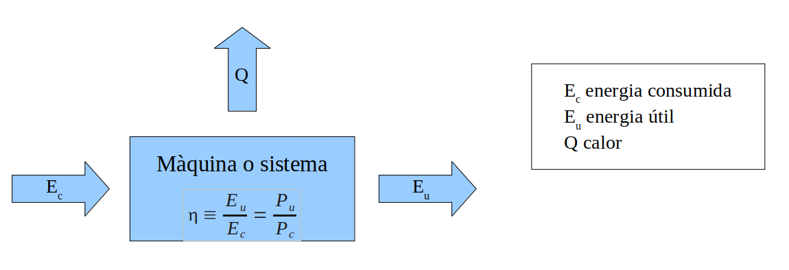

Energia. Treball. Potència#
Pàgina en desenvolupament
Encara estem treballant en aquest document.
Esperem oferir-vos properament el seu contingut.
Disculpeu les molèsties.
Per ara podeu consultar el meu llibre en PDF Llibre CC Tecnologia Industrial I. Energia. Treball. Potència.
L’energia#
Avui en dia ningú posa en dubte la importància de l’energia, una de les necessitats humanes que intenta satisfer la tecnologia. Les fonts d’energia convencional (combustibles fòssils, hidràulica, nuclear) s’esgoten, estan saturades o tenen greus problemes mediambientals (Txernòbil, Fukojima). Un camp on cal investigar, cada vegada més, per poder satisfer l’increment continu de la demanda mundial i optimitzar la seva despesa, i on cada dia es necessitem més tècnics i millor preparats.
Energia per moure el món#
A la teva llar consumeixes energia elèctrica per fer funcionar els electrodomèstics, el gas (energia química) per escalfar el menjar i l’aigua. Els cotxes gasten benzina o gasoil (energia química) Metro, ascensor, llums, calefacció, semàfors, mòbils, màquines… tots gasten energia. Sense energia res funcionaria.
Energia per mesurar#
Malgrat avui en dia està prohibida la seva venda, suposo que coneixeràs els termòmetres de mercuri. Ens permeten mesurar la temperatura, ja sigui del nostre cos o de l’ambient. Quan s’escalfa el mercuri, degut a l’energia tèrmica del cos a mesurar, aquest modifica la seva energia interna i es dilata sobre una escala graduada.
Amb els termòmetres digitals, l’energia tèrmica es transforma en energia elèctrica que un microcontrolador interpreta i visualitza en una pantalla LCD.
Energia per transmetre informació#
Si llegeixes aquest llibre en un tablet o notebook la imatge que veus i que interpretes com a lletres (informació) prové de la llum (energia radiant) que emet la pantalla mitjançant uns petits LEDs que s’encenen gràcies a l’energia elèctrica generada per la bateria (energia química), segons una informació emmagatzemada elèctricament en una memòria de silici segons una informació rebuda via WiFi (energia radiant) quan vas descarregar el fitxer del llibre, fitxer que ha viatjat per fibra òptica en forma de llum modulada des del meu servidor a USA.
Definició d’energia#
A l’ESO es diu que l’energia és allò que es capaç de fer funcionar les coses. No podem dir que aquesta sigui una definició molt elegant. Però és que definir energia no és fàcil. Podeu fer una ullada a l’entrada corresponent a la Viquipèdia.
Molts llibres de text defineixen l’energia com la la capacitat d’un cos de fer un treball. Malauradament, a continuació molts defineixen el treball com la variació d’energia, creant un cercle viciós. D’altres defineixen el treball com el producte de força per desplaçament, limitant el seu estudi al camp de la mecànica i les seves aplicacions i implicacions.
Estem d’acord que sense energia res funciona, ni tan sols el nostres cossos i ments. També estem d’acord en que els treball és la variació d’energia. Però necessitem una definició clara i universal del concepte energia. La definició del concepte físic d’energia més amplia i potent és dir que energia és allò que es conserva. Aquesta és la seva veritable definició, herència de la Ursache de Mayer, que té una història molt interessant [Gui23].
De fet, estem utilitzant el principi de conservació de l’energia (l’energia ni es crea ni es destrueix, només es transforma) per definir-la. Però és així com Einstein va deduir l’equivalència massa-energia al seu article al 1905 [Ein05]: com trobava un terme que depenia de la massa igual a una variació d’energia que no es podia explicar, calia concloure que la massa és una forma d’energia. Ell va tenir el valor de dir-lo i publicar-lo:
\(E=mc^2\)
Representem l’energia per la lletra E. La unitat d’energia és el joule (pronunciat /ˈdʒaʊl/, no oblidem l’origen anglès del físic James Prescott Joule) i la representem per la lletra J.
Treball#
Ja hem dit que l’energia es transforma. El treball es defineix com la variació d’energia associada a aquesta transformació, per tant la seva unitat és també el joule, i es representa amb la lletra W (de l’anglès work, treball):
\(W \equiv \Delta E\)
Potència#
Definim la potència com el quocient entre el treball desenvolupat i el temps al llarg del qual s’ha realitzat aquest treball:
\(P \equiv \Large \frac{W}{t}\)
Representem la potència per la lletra P. La potència es mesura en watts (W):
\(1W \equiv \Large \frac{1J}{1s}\)
Exemple#
Una estufa elèctrica de potència 800 W està encesa 7 minuts cada hora. Calcula l’energia dissipada en forma de calor després de 6 hores.
\(P \equiv \Large \frac{W}{t} \Rightarrow W = P \cdot t\)
\(t=\frac{7min}{1h}\cdot 6h \cdot \frac{60s}{1min} = 2520s\)
\(W = P \cdot t = 800 W \cdot 2520 s = 2016000J = 2,016MJ\)
\(W \simeq 2,02MJ\)
Factors de conversió#
A l’exemple anterior hem fet servir fraccions del tipus
\(\frac{7min}{1h}\), \(\frac{60s}{1min}\)
que expressen raonaments del tipus
de cada hora de funcionament, l’estufa està 7 minuts activa (engegada)
cada minut té 60 segons
En el primer cas, es tracta d’una informació pròpia del problema. No seria correcte pensar que l’estufa ha estat gastant les 6 h que ha estat funcionant. Només 7 minuts de cada hora l’estufa converteix (i gasta) energia elèctrica en calor. Per això introduïm aquest factor corrector.
En el segon cas, es tracta d’una relació universal ( 1 min ≡ 60 s), que hem introduït per obtenir el resultat en unitats del sistema internacional (volem expressar el resultat final em joules, i 1 J = 1 W · 1 s). Tal vegada seria més clar si escrivim
\(t=\frac{7 \cancel{min} activa}{1 \cancel{h funcionament}}\cdot 6 \cancel{h funcionament} \cdot \frac{60s}{1 \cancel{min}} = 2520s \ activa\)
que és una expressió mes detallada però laboriosa d’escriure.
De fet, hem utilitzat altres factors de conversió sense adonar-nos:
1 J és 1 W · 1 s
1 MJ són 1000000 J
així que de forma detallada
\(W = P \cdot t = 800 W \cdot 2520 s = 2016000 \cancel{W} \cancel{s} \cdot \frac{1J}{\cancel{W}\cancel{s}} = 2016000\cancel{J} \cdot \frac{1 MJ}{1000000\cancel{J}} = 2,016MJ\)
Els factors de conversió són una eina potentíssima en la resolució de problemes. Molts problemes d’aquest curs (i dels que surten a les PAU de tecnologia industrial) es resolen amb aquest mètode.
Rendiment#
Malauradament, quan transformem una forma d’energia en altre sempre tenim pèrdues en forma de calor. No és només una qüestió tècnica (fregaments als mecanismes, fuites …). Es tracta d’una impossibilitat física que estudiarem a Tecnologia i Enginyeria II i que respon al segon principi de la Termodinàmica (si no voleu esperar tant us recomano l’excel·lent llibre Física de lo imposible [KS10], pot ser una bona lectura per a aquestes vacances de Nadal).
Definim el rendiment d’una màquina o sistema com el quocient entre l’energia útil \(E_u\) que obtenim i l’energia que consumeix \(E_c\). El rendiment es simbolitza amb la lletra qrega eta minúscula \(\eta\):

Podem expressar el rendiment com el quocient de les respectives potències, només cal dividir numerador i denominador pel temps. Com es tracta d’un quocient entre valors de la mateixa magnitud (ja sigui entre energies o entre potències) el resultat serà adimensional (no porta unitats). Això si, aquest valor serà sempre inferior a 1, i només serà igual a 1 en el cas ideal d’un sistema sense pèrdues. Per això és habitual donar el rendiment en %.
\(\Large \eta \equiv \frac{E_u}{E_c} = \frac{E_u/t}{E_c/t} = \frac{P_u}{P_c} \le 1 \)
Xifres significatives#
A l’exemple anterior hem aproximat el valor 1/3 per 0,33. Com les dades tenen dues xifres significatives (33 W, 99 W) sembla coherent donar el resultat amb el mateix nombre de xifres significatives (0,33, 33%).
Seria completament incorrecte donar totes les xifres que dona la calculadora en fer les operacions (1/3 = 0,3333333333) o, el que es pitjor, donar infinites xifres (1/3 = \(0,\hat{3}\)). No podem donar resultats més precisos que les dades que ens donen. És un error conceptual greu penalitzat severament en les proves de les PAU.
No hem de confondre el nombre de xifres significatives amb el nombre de decimals. Els nombres següents tenen tots les mateixes xifres significatives (3):
\(124·10^4\) |
0,356 |
7,81 |
90,3 |
333 |
0,000000458 |
Moltes calculadores permeten activar el format enginyeril, que dona el resultat amb un exponent múltiple de 3 i amb les xifres significatives fixades. Això permet obtenir el resultat correcte fàcilment i posar el múltiple o submúltiple adequat (45,79 MJ, 236,2 kW, 9,024 ms …)